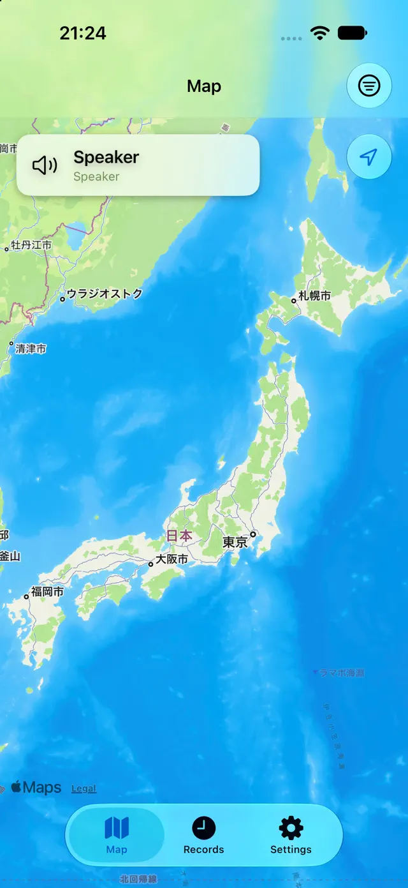
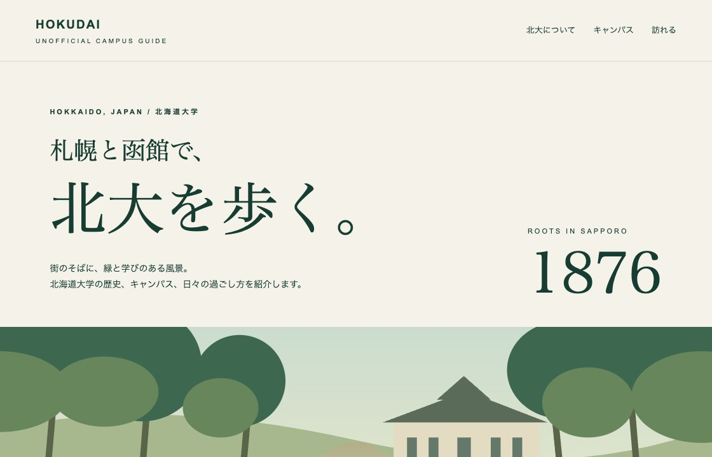
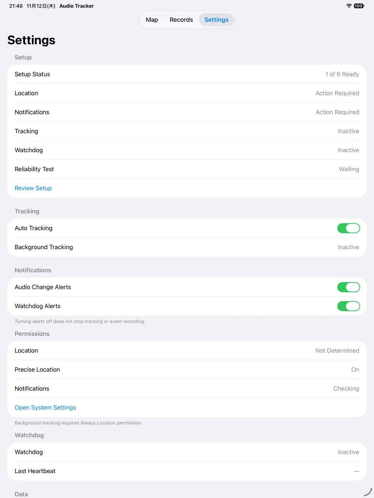
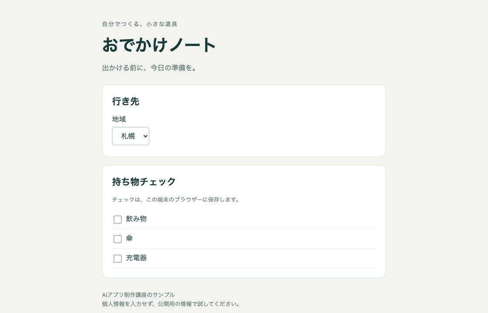
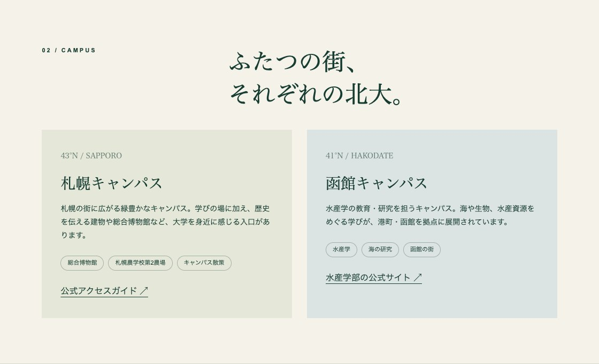
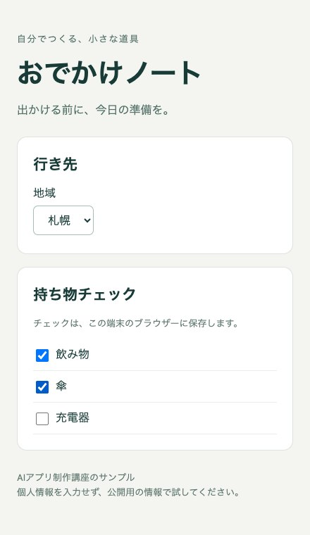

Fluent Weather App
天気予報や気温の推移、雨雲レーダーをひとつの画面で確認できる、Windows向けの天気アプリ。
 Fluent Weather App / 01
Fluent Weather App / 01

Audio Tracker / 01 Trace Log / 01
Trace Log / 01
 Fluent Weather App / 02
Fluent Weather App / 02

HOKUDAI GUIDE / 01 Trace Log / icon
Audio Tracker / 02
おでかけノート / 01 おでかけノート / ロゴ
HOKUDAI GUIDE / 02 Trace Log / 02
Trace Log / 02

おでかけノート / 02 About me天気予報や気温の推移、雨雲レーダーをひとつの画面で確認できる、Windows向けの天気アプリ。
イヤホンやスピーカーの接続履歴を地図とタイムラインで振り返るアプリ。
歩いた道や立ち寄った場所、写真や曲を、一日のタイムラインで振り返るアプリ。
北海道大学の歴史や、札幌・函館キャンパスの見どころを紹介する非公式ガイド。
行き先を選んで持ち物をチェックする小さなWebアプリ。初心者向けAIアプリ制作講座の公開教材です。
文字入力とキーボード操作に関するWindows向けの実験。
電気・情報・システム工学の学習と実験。